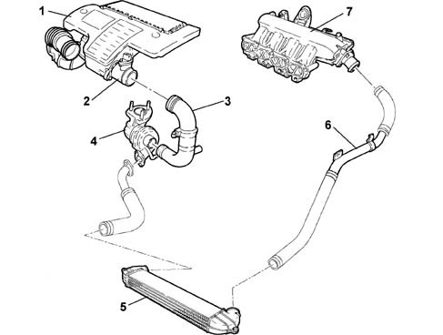
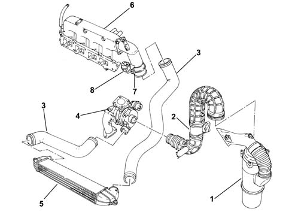
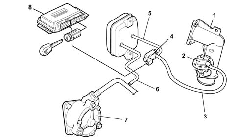

Introduction - ENGINE AIR SUPPLY CIRCUIT
- Path
- Descriptions > 10 ENGINE > 1048 ENGINE AIR SUPPLY CIRCUIT > Introduction - ENGINE AIR SUPPLY CIRCUIT
- Kind
- system description
- Applies to
- all engines; all production periods
- Interactive page
- https://sloeber94.github.io/elrnDB-fDbl/en/#/2585393
Applies to: all engines; all production periods
STRUCTURE
AIR SUPPLY SYSTEM

1 - Air filter complete with resonator 2 - Flow meter 3 - Connection sleeve to turbocharger 4 - Turbocharger 5 - Air-air heat exchanger (intercooler) 6 - Connecting sleeve between intercooler - air inlet manifold 7 - Manifold air intake
Applies to: all engines; all production periods
The intake air is filtered and directed to the exhaust gas turbocharger.
Before reaching the engine, the compressed air is cooled in the air/air heat exchanger.

1, Complete filter 2, Flow meter 3, Hose 4, Turbocharger 5, Air - air heat exchanger (intercooler) 6, Inlet chamber 7, Throttle body 8, Throttle control actuator
Applies to: all engines; all production periods
CONSTRUCTION FEATURES
To reduce engine noise when it is being switched off (noise produced by the DVA flywheel), a throttle has been introduced in the inlet manifold with the task of stopping the flow of air to the cylinders.
Applies to: all engines; all production periods
COMPOSITION
The system consists of:

1, Throttle body; 2, Pneumatic actuator; 3, Pipe connecting pneumatic actuator to Pierburg solenoid valve; 4, Pierburg solenoil valve operated by engine management control unit for sending vacuum to pneumatic actuator 5, Pipe connecting Pierburg solenoid to vacuum tank 6, Pipe connecting vacuum tank to vacuum pump 7, Vane-type vacuum pump 8, Engine management control unit
Applies to: all engines; all production periods
OPERATION
With the engine switched off, the throttle is open because there is no vacuum.
With the engine running, the throttle is open because, as the Pierburg solenoid valve is not supplied, it prevents the vacuum from reaching the pneumatic actuator.
The vacuum accumulates in the reservoir whilst the engine is running.
Whilst the engine is being switched off (when the key is turned to the OFF position), the control unit keeps the actuator relay feed supplied for 4 or 5 seconds and, at the same time, places the Pierburg solenoid valve to earth which, on opening, sends the vacuum, which has accumulated in the vacuum reservoir, to the pneumatic actuator which closes the throttle interrupting the flow of air to the cylinders.